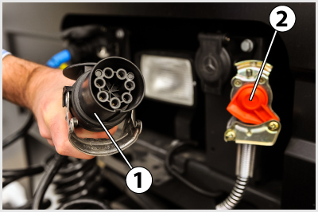
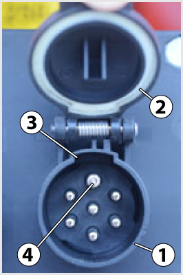
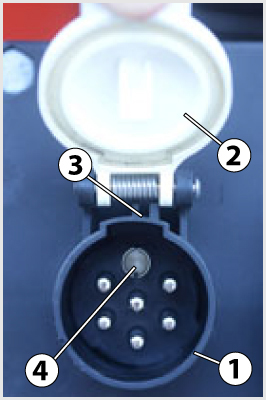
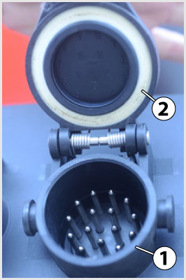
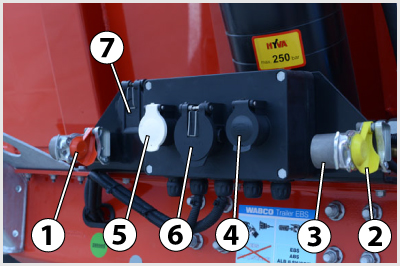
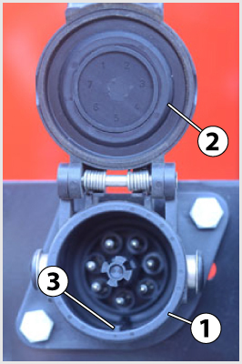

- 128. A képen látható 1-es jelű alkatrész... #704548
- egy olvadó biztosíték, amely a vontató egy bizonyos áramkörét védi a túlterheléstől.
- egy ellenőrző lámpát tartalmazó kapcsoló, mellyel a vontató egy bizonyos áramkörét lehet tesztelni.
- egy járműdiagnosztikai célokra használt ellenőrző lámpa.
- egy relé, amely érzékeli a pótkocsi felkapcsolását a vontatóra.

- 129. A képen látható 1-es jelű alkatrész egy nyergesvontató... #704608
- ISO 7638 szerinti, 7 pólusú ABS/EBS csatlakozója.
- ISO 1185 szerinti, 24N típusú, 7 pólusú elektromos csatlakozója.
- ISO 3731 szerinti, 24S típusú, 7 pólusú elektromos csatlakozója.
- ISO 12098 szerinti, 15 pólusú elektromos csatlakozója.

- 130. Milyen hálózati feszültségű járműre szerelhetik fel a képen látható kialakítású, ISO 1185 szerinti, 24N típusú 7 pólusú pótkocsi elektromos csatlakozóaljzatot? #704615
- 24 V.
- 12 V.
- 6 V.
- 42 V.

- 131. Milyen hálózati feszültségű járműre szerelhetik fel a képen látható kialakítású, ISO 3731 szerinti, 24S típusú, 7 pólusú pótkocsi elektromos csatlakozóaljzatot? #704616
- 24 V.
- 12 V.
- 6 V.
- 42 V.

- 132. Mire szolgál a képen látható ISO 12098 szerinti, 15 pólusú pótkocsi elektromos csatlakozóaljzat? #704617
- A vontató és a pótkocsi elektromos rendszereinek összekötésére (az ABS/EBS kapcsolatot kivéve). A pótkocsi világítóberendezéseinek műkdötetésére, egyéb fogyasztók táplálására.
- A pótkocsi valamennyi korszerű elektronikus rendszerének (ABS, EBS, ESP stb.) táplálására, vezérlésére és hibáik visszajelzésére.
- Kizárólag a pókocsi és a vontató elektronikus fékrendszereinek (EBS) megfelelő összekapcsolására.
- A pótkocsi blokkolásgátló rendszerének (ABS) táplálására, vezérlésére és hibáinak visszajelzésére.
- 133. Mi köti össze a pótkocsi villamos hálózatát a vontató villamos hálózatával? #704938
- Többpólusú dugós csatlakozó(k) köti(k) össze.
- Egy pozitív vezeték köti össze, mert a jármű és a pótkocsi villamos hálózata negatív testelésű.
- Egy pozitív és egy negatív vezeték köti össze.
- Nincs szükség összeköttetésre, mert a két jármű elektromos rendszere teljesen független egymástól.
- 134. Az ABS vagy EBS rendszerrel felszerelt pótkocsi esetén a fékrendszer elektromos csatlakozóján keresztül... #704939
- továbbítani kell a fékrendszer hibajelzéseit is a vontató felé.
- csak az ABS vagy EBS rendszerhez szükséges áramot kell biztosítani.
- biztosítani kell a jármű energiatárolójának külső töltési lehetőségét is.
- működtetni kell a pótkocsi féklámpáit is.
- 135. Van-e általában saját akkumulátora és biztosítéktáblája a pótkocsinak? #704940
- Nincs.
- Van.
- 750 kg megengedett össztömeg felett van.
- 3500 kg megengedett össztömeg felett van.
- 136. A vontatót és a pótkocsit összekötő elektromos kábeleket lehet-e rossz helyzetben csatlakoztatni, illetve a különböző csatlakozókat egymással felcserélni? #704941
- Nem, mert a dugalj és a dugvilla kialakítása ezt nem teszi lehetővé.
- Igen, ezért a csatlakoztatásnál fokozott elővigyázatossággal kell eljárni.

- 137. A képen látható 5-ös jelű alkatrész egy félpótkocsi 24S típusú, 7 pólusú... #721092
- elektromos csatlakozója, melyet a 4-es jelű, fekete fedelű, 7 pólusú 24N csatlakozóval együtt használnak a szükséges pólusszám elérés érdekében.
- elektromos csatlakozója, melyet a 4-es jelű, fekete fedelű, 7 pólusú 24N csatlakozó helyett használnak 12 V-os hálózati feszülségű vontató esetén.
- ABS csatlakozója.
- EBS csatlakozója.
- 138. Mire szolgál a képen látható 15 pólusú csatlakozó? #721093
- A vontató és a pótkocsi elektromos rendszerének összekötésére.
- A vontató és a pótkocsi fékrendszerének összekötésére.
- A vontató és a pótkocsi ABS rendszerének összekötésére.
- A vontató és a pótkocsi EBS rendszerének összekötésére.

- 139. Mire szolgálhat a képen látható 7 pólusú csatlakozó? #721094
- A pótkocsi ABS áramellátásának és működés visszajelzésének biztosítására, vagy a vontató és a pótkocsi EBS rendszereinek összekapcsolására.
- A vontató és a pótkocsi fékrendszerének összekötésére.
- A vontató és a pótkocsi ABS rendszerének összekötésére.
- A vontató és a pótkocsi elektromos rendszerének összekötésére.
- 140. Hogyan védik a normál vontatókon, illetve a félpótkocsikon rögzített pótkocsi elektromos csatlakozó dugvillát a szennyeződéstől, amikor ahhoz nem csatlakoztatnak dugaljat? #721095
- Rugóterhelésű, automatikusan a dugvillára záródó védőfedélel.
- A dugalj leszerelésével.
- A dugvilla megfelelő kenésével.
- 141. Milyen megoldást alkalmaznak a vontató és pótkocsija közötti elektromos kapcsolat létrehozására, amióta nem elegendő a hétpólusú 24 N csatlakozó által biztosított pólusszám? #721096
- A 24 N csatlakozó mellett a vontatót és a pótkocsit egy második, 24S csatklakozópárral is összekötik, vagy pedig egy darab 15-pólusú csatlakozópárt használnak.
- A jobb- és baloldali helyzetjelzőket egy közös póluson keresztül táplálják.
- A hiányzó kapcsolatok létrehozására a hétpólusú ABS/EBS csatlakozó fölösleges pólusait használhatják.
- A 24N kiváltására bevezették a 10-pólusú 24S csatlakozópárt.
- 142. Hogyan lehet megvédeni a pótkocsi elektromos csatlakoztatásra szolgáló lengőkábelek dugalját a szennyeződéstől, amikor azokat nem használják? #721097
- A kábelvégen levő dugaljat a járművön elhelyezett, úgynevezett vakdugvillába kell rögzíteni.
- Az elektromos kábelt le kell szerelni.
- A dugalj zárófedelének lehajtásával.
- 143. A képen látható 4-es jelű alkatrész egy félpótkocsi... #724152
- 24N típusú, 7 pólusú elektromos csatlakozója.
- 24S típusú, 7 pólusú elektromos csatlakozója.
- 15 pólusú elektromos csatlakozója.
- ABS/EBS csatlakozója.
- 144. A képen látható 6-os jelű alkatrész egy félpótkocsi... #724153
- 15 pólusú elektromos csatlakozója.
- 24N típusú, 7 pólusú elektromos csatlakozója.
- 24S típusú, 7 pólusú elektromos csatlakozója.
- ABS/EBS csatlakozója.
- 145. A képen látható 7-es jelű alkatrész egy félpótkocsi... #724154
- ABS/EBS csatlakozója.
- 24N típusú, 7 pólusú elektromos csatlakozója.
- 24S típusú, 7 pólusú elektromos csatlakozója.
- 15 pólusú elektromos csatlakozója.
- 146. Mire szolgál a képen látható, félpótkocsi homlokfalára szerelt 24N típusú csatlakozó? #724155
- A vontató és a pótkocsi 24 V-os elektromos rendszereinek összekötésére.
- A vontató és a pótkocsi 12 V-os elektromos rendszereinek összekötésére.
- A vontató és a pótkocsi ABS rendszereinek összekötésére.
- A vontató és a pótkocsi EBS rendszereinek összekötésére.
- 147. Mire szolgál a képen látható, félpótkocsi homlokfalára szerelt 24S típusú csatlakozó? #724156
- A vontató és a pótkocsi 24 V-os elektromos rendszereinek összekötésére.
- A vontató és a pótkocsi 12 V-os elektromos rendszereinek összekötésére.
- A vontató és a pótkocsi ABS rendszereinek összekötésére.
- A vontató és a pótkocsi EBS rendszereinek összekötésére.
- 148. Mi tette szükségessé a képen látható 24S típusú csatlakozók megjelenését a pótkocsikon és vontatóikon? #724157
- Az, hogy az ugyancsak hét pólusú 24N típusú csatlakozó érintkező száma már nem volt elegendő a kötelező és opcionális fogyasztók áramellátásához.
- A 24 V-os hálózati feszültség megjelenése a vontatókon és a pókocsikon.
- A blokkolásgátló rendszerek (ABS) megjelenése, mert ezeknek az áramellátását is meg kellett oldani.
- Az elektronikus fékrendszerek (EBS) megjelenése, mert ezeknek az áramellátását, valamint a vontató és a pótkocsi EBS rendszerei közti kommunikációt is meg kellett oldani.
- 149. A vontató és a pótkocsi blokkolásgátló rendszerei (ABS), illetve elektronikus fékrendszerei (EBS) közül melyek között valósul meg adatáramlás? #724158
- Csak az EBS esetében, az ABS rendszerek egymástól függetlenül működnek.
- Csak az ABS esetében, az EBS rendszerek egymástól függetlenül működnek.
- Mindkét rendszer esetében.
- Egyik rendszer esetében sem.
- 150. Vontathatja-e az elektronikus fékrendszerrel (EBS) felszerelt pótkocsit EBS nélküli vontatóval? #724159
- Igen.
- Nem.
- Igen, de csak csökkentett sebességgel.
- Igen, de csak a járművek telephelyén belül.